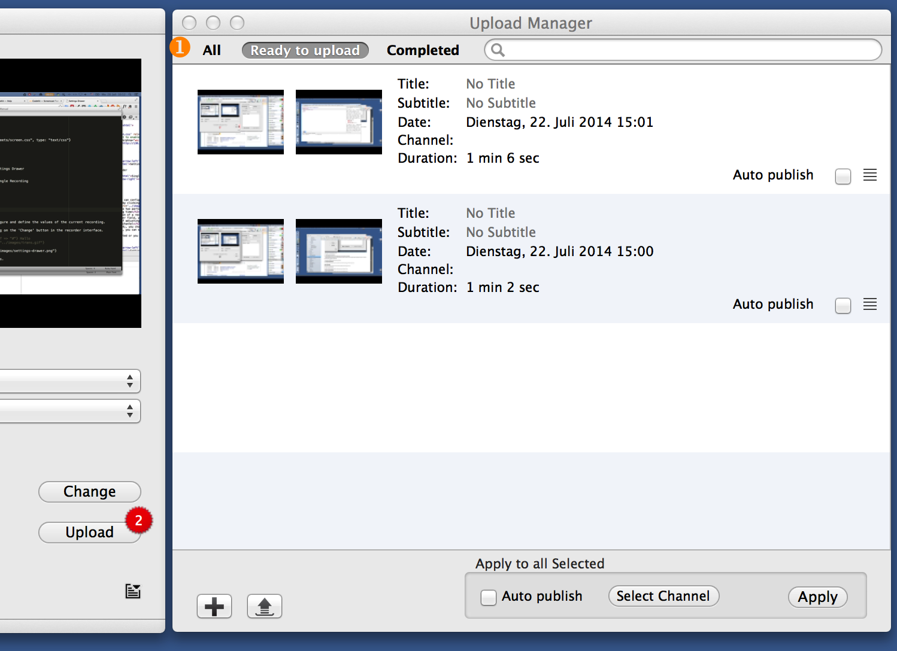

Upload Manager
In the upload manager you can - the name says it all - manage and upload your completed recordings.
The upload manager can be opened by clicking on the 'Upload' button in the recorder interface. If you have recordings waiting to be uploaded, this button will have a red badge telling the number of pending recordings.
Components of the Upload Manager
① Filter and Search Bar
This bar allows you to search for specific recordings. By clicking on the texts on the left, you can filter your recording by status:- All: Show all recordings
- Ready to upload: Show only recordings that are not yet uploaded
- Completed: Show only recordings that have been successfullly uploaded
② Recording List
In the recording list, you find all the recordings that fulfill the conditions defined by the filter and/or the search term above.
③ Per-Channel Options
- Give the recording a title and subtitle
- Auto publish Automatically publish the recording once uploaded. If this option is enabled, there's no need to manually cut and publish the recording.
-
More options can be found behind the Hamburger menu
- Upload Recording: Send the recording to the SWITCHcast server for subsequent cutting and editing
- Change AAI Owner of Recording: You will be asked to authenticate yourself with AAI. Once you have done so successfully, your future actions will be done using these credentials.
- Delete Recording: Pretty self-explanatory, I reckon
- Reveal Recording in Finder: Will open a Finder window that shows the actual file of the recording. This can be handy for: General trouble shooting, Manual upload of recording, Use of original recording outside of SWITCHcast
④ General Options
- Import Video Allows you to manually add videos from your locale file system. This way you can ingest external videos into the SWITCHcast workflow.
- Upload all Videos This button sends all recordings that have not yet been uploaded to the SWITCHcast server.
⑤ Bulk Options
These options will be applied to all selected recordings. You can select recordings by left-clicking on them while pressing the cmd-key.- Auto Publish Enable auto publishing, for explanation see above
- Select Channel Clicking on this button opens the channel list. This allows you to move recordings to another channel than the one chosen before starting the recording.
- Apply Your bulk action will only be executed once you have clicked on this button